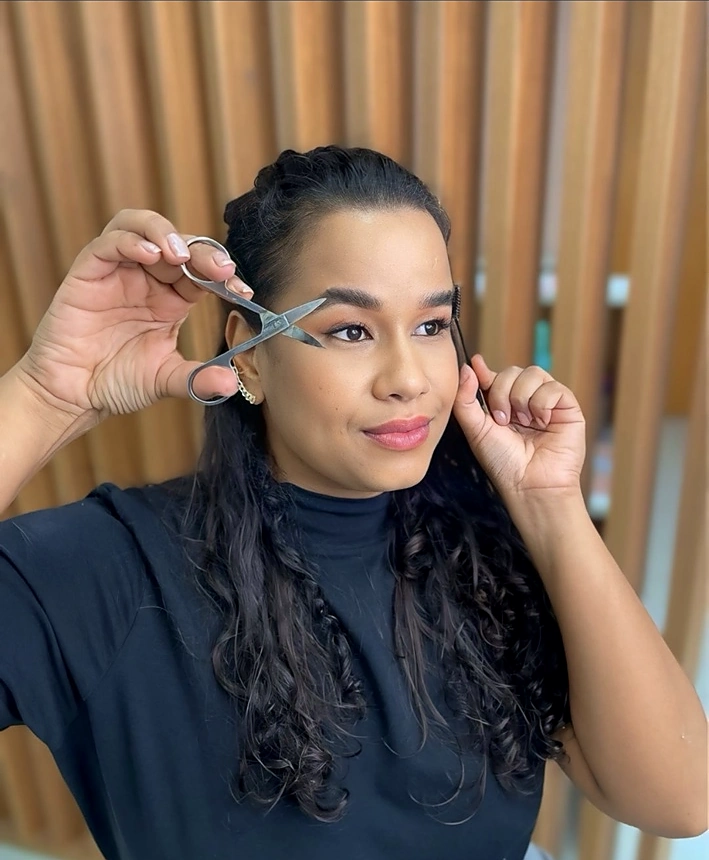
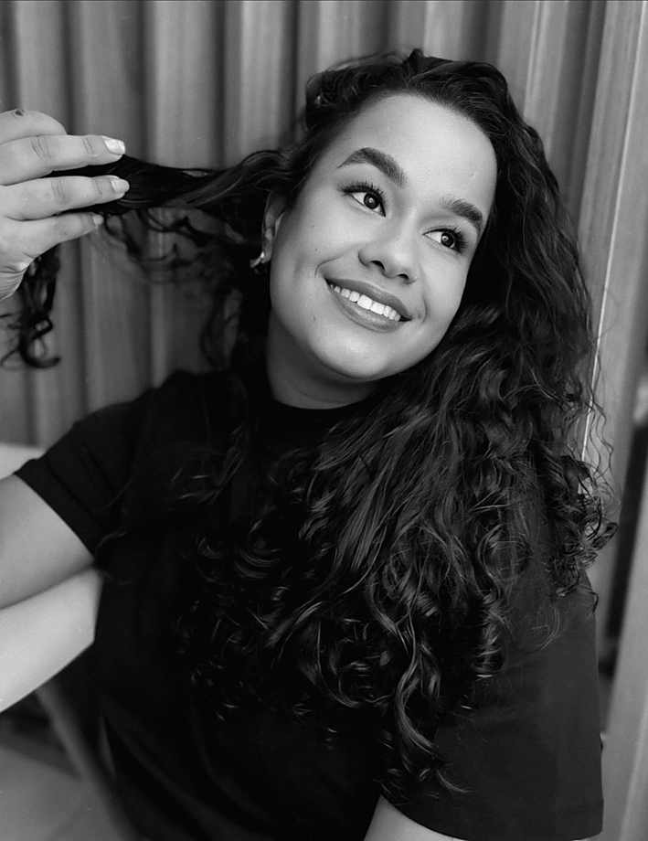

Design de sobrancelhas
Um desenho pensado para harmonizar seus traços e valorizar a beleza que já é sua.
Saiba maisSOBRANCELHAS COM IDENTIDADE · SERRA, ES
Cada sobrancelha conta uma história. Aqui, a sua é valorizada com cuidado, sensibilidade e um resultado que continua sendo você.
01 / UM OLHAR SÓ SEU

POR TRÁS DE CADA OLHAR · MARCIMAIS DO QUE SOBRANCELHAS
Seu rosto tem traços únicos. Por isso, cada atendimento começa com um olhar atento às suas preferências, à sua expressão e ao resultado que faz sentido para você.
Descubra os serviçosO SEU MOMENTO DE CUIDADO
Tratamentos pensados para realçar sua expressão sem perder o que torna você única.
Um desenho pensado para harmonizar seus traços e valorizar a beleza que já é sua.
Saiba maisFios alinhados, textura e presença para um olhar expressivo com acabamento elegante.
Saiba maisMais definição e equilíbrio de cor, de acordo com o efeito que combina com você.
Saiba maisQuer encontrar o atendimento ideal? Conte o que você procura e vamos conversar.
A EXPERIÊNCIA MARCI
Conheça o cuidado por trás de cada resultado. Selecione uma etapa para descobrir como esse momento é pensado para você.
Antes de pensar no desenho, quero entender o que você gosta, como se sente e o que espera ver no espelho.
Vamos conversarRESULTADOS REAIS · BELEZAS ÚNICAS
Uma coleção de expressões reais. Toque em uma foto para ver de perto.
Cada resultado é individual e pode variar conforme os fios e as características de cada pessoa.
Cada sobrancelha conta uma história. Te ajudo a contar a sua.
— MARCI BROWS ART
PRAZER, MARCI
Sou a Marci e acredito que nenhuma sobrancelha precisa seguir uma fórmula. Gosto de ouvir a história de quem chega até mim, conhecer suas preferências e cuidar de cada detalhe com atenção.
Meu trabalho é valorizar o que já é seu, para que você se reconheça ainda mais no espelho. Será um prazer receber você.
Conversar com a MarciSEU PRÓXIMO OLHAR COMEÇA AQUI
Me conta o que você deseja. Vou adorar conversar e te ajudar a escolher o cuidado ideal.
Agendar pelo WhatsApp